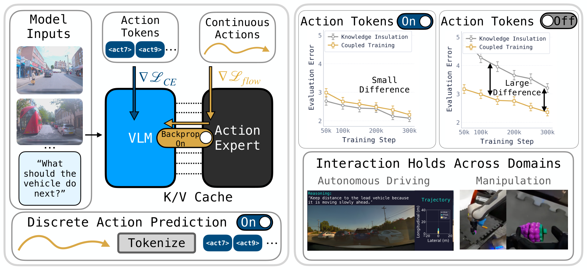
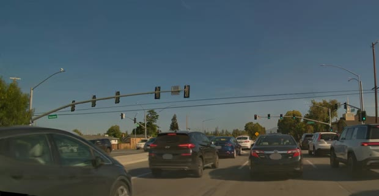
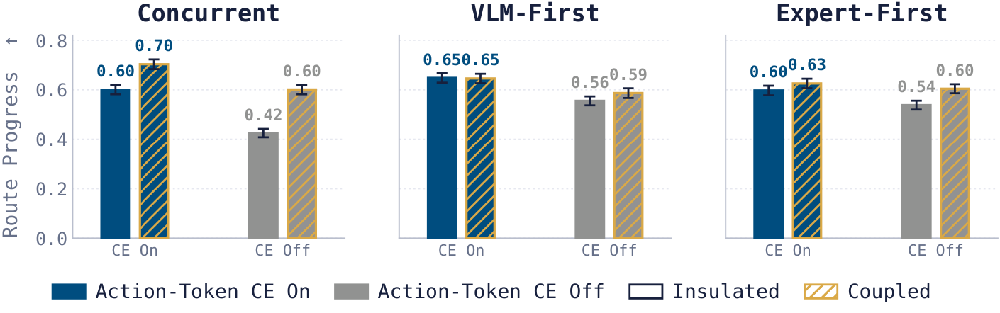
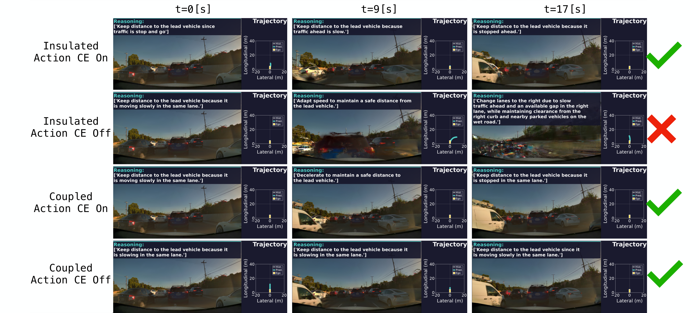

Vision-language-action research · Driving & manipulation
Should the Action Expert Train the VLM?
Action-token supervision and gradient routing in Mixture-of-Transformer VLAs
We disentangle these factors in autonomous driving and manipulation by independently varying action-token supervision and whether the expert’s loss updates the VLM. In open-loop driving, insulation is competitive with coupling when action tokens are supervised, but increases trajectory-prediction error by roughly 25% when they are not. Under joint training, coupling improves closed-loop performance regardless of supervision.
Paper link, authors, and citation will be added with the arXiv release.
Should the continuous-action loss train only the expert, or also the VLM that produces its conditioning K/V cache?Figure 1

We independently vary whether action tokens are supervised and whether the expert’s gradient updates the VLM.
01 Action supervision and gradient routing
Action-token supervision shapes the effect of expert-to-VLM gradient flow.
The VLM processes visual observations and language instructions, while the expert generates continuous action chunks conditioned on the VLM’s per-layer key–value representations. We vary future-action-token supervision and expert-to-VLM gradient flow independently.
01
Action-token supervisionFuture-trajectory tokens / FAST action postfix
02
Gradient routingDoes the flow loss update the VLM?
The action-token CE and expert flow loss both update the VLM.
Action supervision and expert gradient flow
VLM predicts future-action tokens<act7><act9>…Trajectory tokens (driving) · FAST postfix (manipulation)Action-token CE updates VLM ↓
Continuous actionsFlow loss ∇Lflow ↓

Visual observation“What should the vehicle do next?”
→
VLM
→layerwise K/V
Action expert
×stop-gradient
Flow loss gradient reaches the VLM
The VLM is supervised to predict future-action tokens during training. They are not decoded at evaluation.
VQA, reasoning, and structural-token supervision remain active in every condition. Stop-gradient changes only the backward pass through the K/V interface.
02 Experimental design
Action-token supervision, gradient routing, and training schedules.
We test whether supervision on discrete future-action tokens changes the effect of propagating gradients from a continuous action expert into the VLM. We vary the two factors independently while holding the architecture and semantic supervision fixed.
All four conditions are evaluated under concurrent, VLM-first, and expert-first training.
01
Same future trajectory
The discrete action tokens and continuous expert encode the same future trajectory.
02
Gradient routing
Insulation stops the expert’s gradient before it enters the VLM. The forward computation is unchanged.
03
Training schedules
Concurrent training starts both modules together. VLM-first and expert-first training start one module after 100k steps of training the other.
03 Results
The value of insulation depends on action supervision and evaluation setting.
In open-loop driving, insulation is competitive with coupling when action tokens are supervised. Under concurrent training, coupling improves closed-loop performance regardless of supervision.
01 / Open-loop driving ADE ↓
The effect of gradient routing depends on action-token supervision.
With action-token supervision, insulation slightly lowers ADE on the Public Golden split, while the OOD routing difference is comparatively small. Without action-token supervision, the insulated model has substantially higher ADE in both evaluations. Relative to insulation, coupling reduces ADE by approximately 26% on Public Golden and 24% on OOD.
First-sample mean ADE at 300k total steps. Bootstrap intervals capture variation across evaluation clips for fixed checkpoints.
First-sample mean ADE across training histories; lower is better. Source: manuscript figure.
02 / Closed-loop driving Route progress ↑
Coupling improves route progress with and without action-token supervision.
In concurrent training, coupling raises AlpaSim route progress from 0.600 to 0.703 with action-token supervision and from 0.425 to 0.601 without it. The latter is a 17.6 percentage-point increase on the same evaluation scenes.
Five stochastic rollouts per scene are averaged within each scene. Progress is normalized from 0 to 1.
See closed-loop progress across training histories ↗

AlpaSim route progress across the three driving training histories. Source: manuscript figure.
03 / Robot manipulation Task progress ↑
Coupling improves observed closed-loop manipulation progress with and without FAST supervision.
The observed gain is larger without FAST: mean progress rises from 10.3% to 32.9%, compared with 19.5% to 30.7% with FAST.
Equal-weight mean over BlockStackKitchen, FoodBussing, and PanClean at 400k training steps.
Three-environment averagePolaRiS
FAST on · Insulated
19.5%
FAST on · Coupled
30.7%
FAST off · Insulated
10.3%
FAST off · Coupled
32.9%
Bar scale: 0–40% progress. Coupled training without FAST achieves the highest mean progress among the four conditions.
04 Qualitative examples
Selected closed-loop rollouts.
These examples show individual rollouts. The results above report aggregate evaluations.
A / Driving
Three scenes, four training conditions
Each scene shows S0 300k AlpaSim rollouts for the four action-token and gradient-routing conditions. Select a scene to compare the model reasoning and predicted trajectory.
S0 · 300k steps · 20 s
Insulated · tokens on
Insulated · tokens off
Coupled · tokens on
Coupled · tokens off
0:00 / 0:20
See the manuscript’s driving qualitative figure ↗

Selected closed-loop driving cases from the manuscript.
B / MolmoAct2 manipulation
Three paired tasks
Four S0 conditions from the same initial state and instruction in each task. The progress score updates when the PolaRiS evaluator records a new milestone.
S0 300k · PolaRiS adaptation 1k · 15 s
Use the yellow sponge to scrub the blue handle frying pan.
Insulated · FAST on
Progress0%
Insulated · FAST off
Progress0%
Coupled · FAST on
Progress0%
Coupled · FAST off
Progress0%
0:00 / 0:15
“
05 Discussion
VLM insulation is a training decision, not a default VLA training recipe.
Action-token supervision and expert gradients can partly substitute for each other in learning representations useful for control. Under concurrent training, coupling improves closed-loop route progress even with action-token supervision, and the same pattern appears in manipulation.